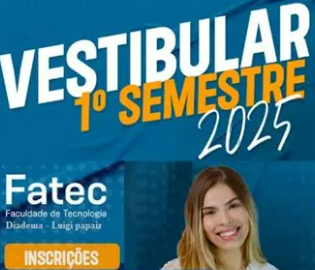

Por que escolher a FATEC?
A FATEC oferece cursos gratuitos de qualidade, com foco em tecnologia, inovação e empregabilidade.
- Ensino público e gratuito
- Cursos voltados para o mercado
- Professores qualificados
- Parcerias com empresas
Inscrições abertas
Não perca a oportunidade de garantir sua vaga em um dos cursos mais procurados e concorridos do estado.
Vestibular Fatec - 2025